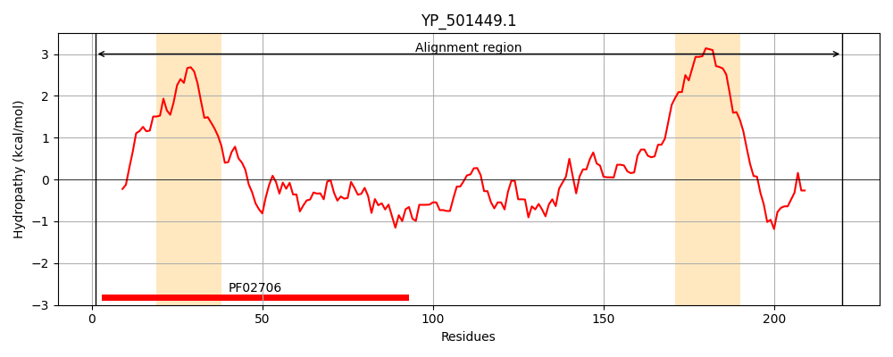
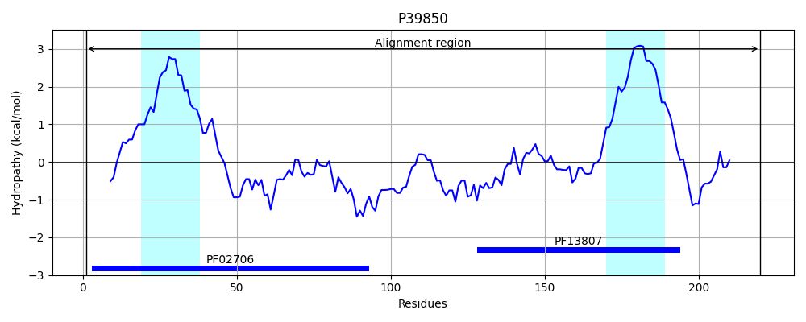
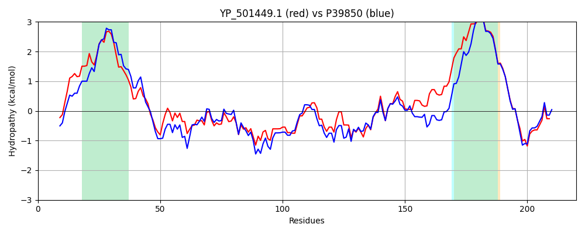

Hit Accession: P39850
Hit TCID: 8.A.3.2.1
Hit Description: gnl|BL_ORD_ID|10312 gnl|TC-DB|P39850|8.A.3.2.1 CAPA protein - Staphylococcus aureus.
Mach Len: 220
e:0.000000
Query TMS Count : 2
Hit TMS Count: 2
TMS-Overlap Score: 1.950000
Predicted Substrates:None
BLAST Alignment:
Score: 615 , Bit scores: 241 bits, E-value: 2.9e-81, Alignment length: 220, Percentage identity: 54
Query: 1 MKEKFDLVKLLNILKKNIKLLLILPAICLVVSAALTFFVMPDKYTASTQILVNMKKSSSDLAFQNVQSSLQSVNTYTEIIKSPRILDKVSREFDGQYSTAELNSFLKVTNQTNSQIITVSVTTGNKSESDKIVNKISKVFAHDMPKIMSVDNVTILSSAHDNAVKVSPIVSVNLVISIIVGIVLAILIIFLKELLDKRIKTEEDVESQLGLPILGSIQKF 220
M+ DL +LL ++KN+KLL+ILP + L++SA ++FF + KY ASTQILVN K + S + Q VQS++Q VNTY+EI+KSPRILDKVS+E D +YS +E++S L VTNQ SQ++ + V + + S S+KI NKI++VF+ ++P IM+VDNV++LS+A + +V+P VNLV+ +++G+V+A+LIIF+KE+ DKRIKTEE+VE++L +P+LGSIQKF
Sbjct: 1 MESTIDLSELLGRVRKNMKLLIILPLLGLLISAIISFFFLDVKYQASTQILVNQKGNDSQIMAQEVQSNIQLVNTYSEIVKSPRILDKVSKELDDKYSRSEISSMLTVTNQAESQVLNIDVESKSGSNSEKIANKIAEVFSDEVPDIMNVDNVSVLSTADNTGKQVAPKPMVNLVVGLVIGLVIALLIIFIKEVFDKRIKTEEEVENELVIPVLGSIQKF 220 | Protein Hydropathy Plots: |
|---|
|  |  |
Pairwise Alignment-Hydropathy Plot:
|
|---|
|  |